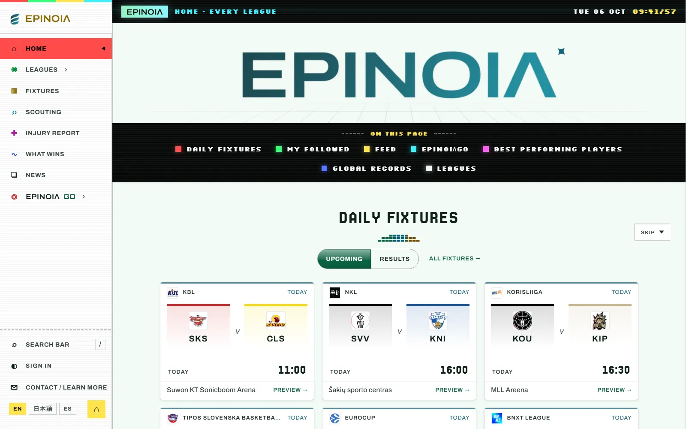
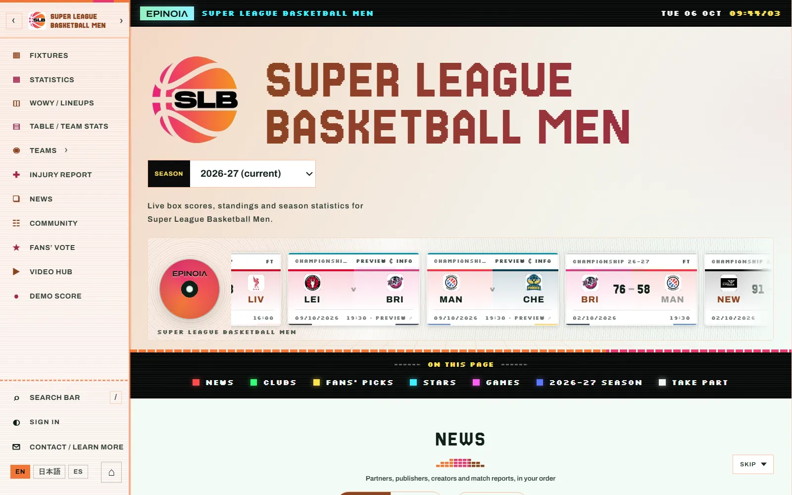
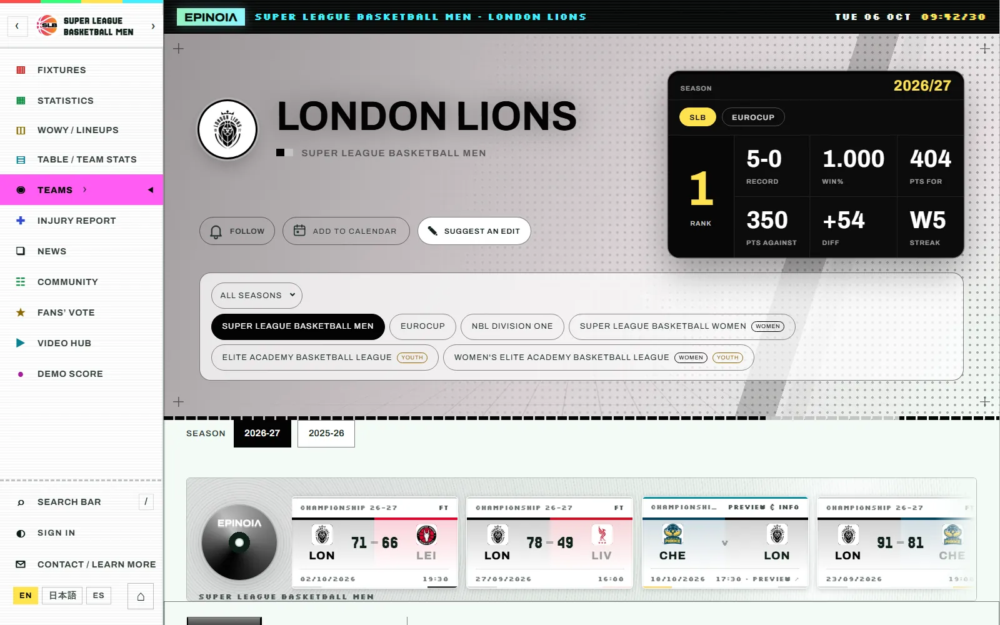
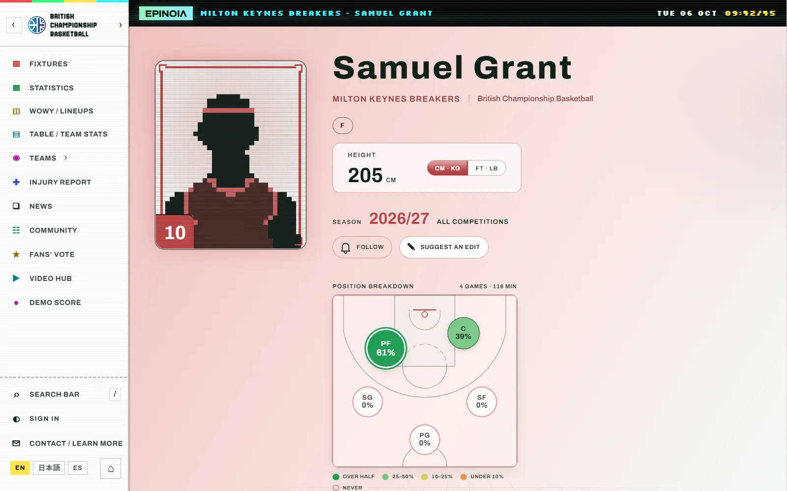
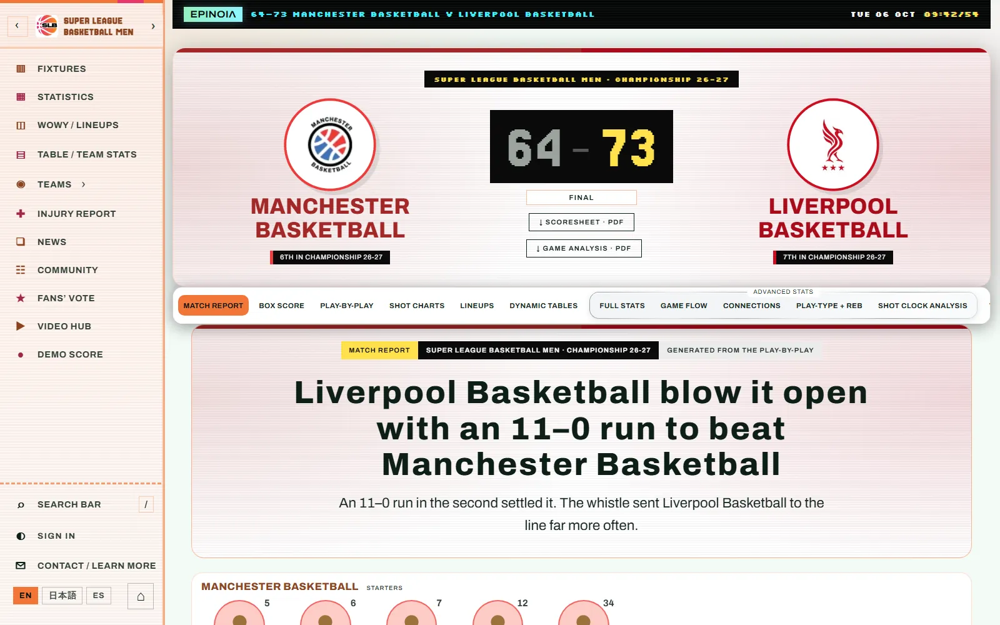
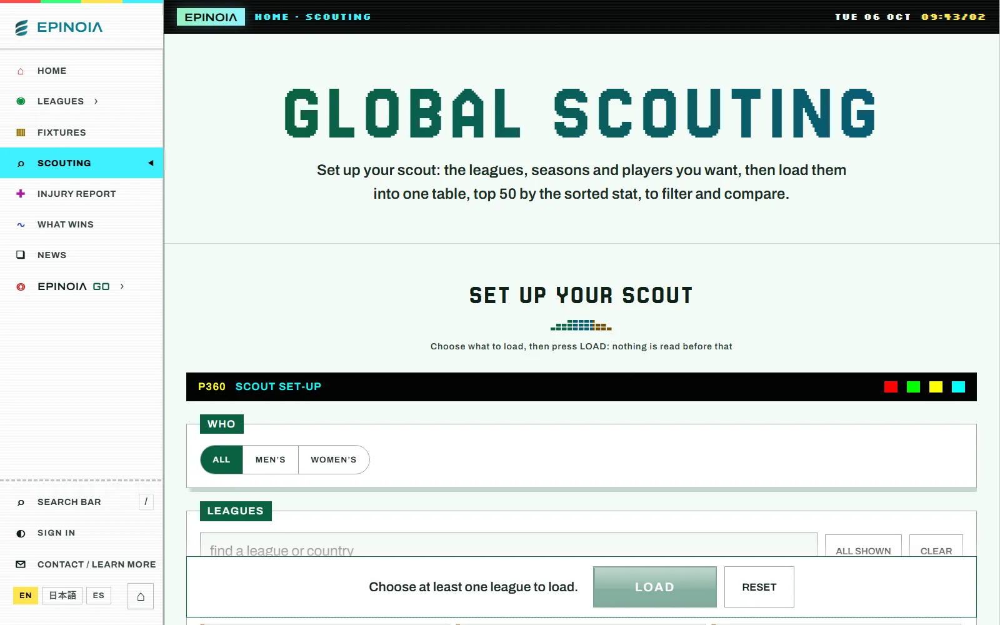
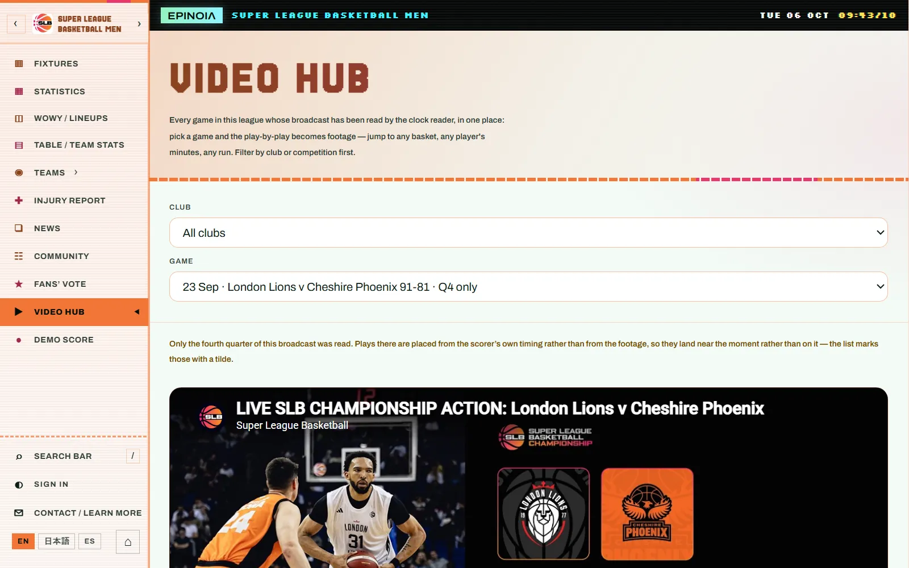
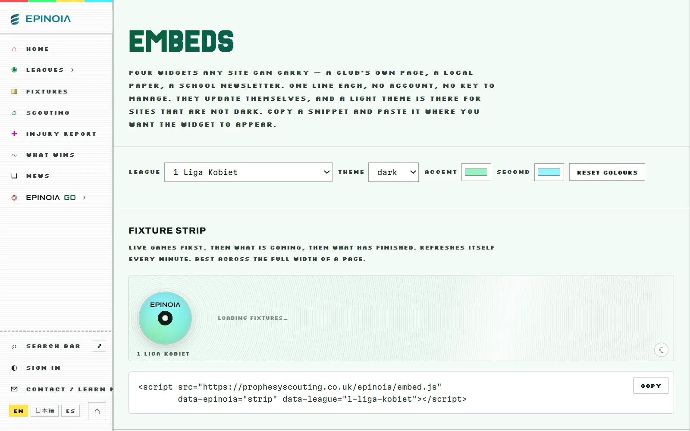
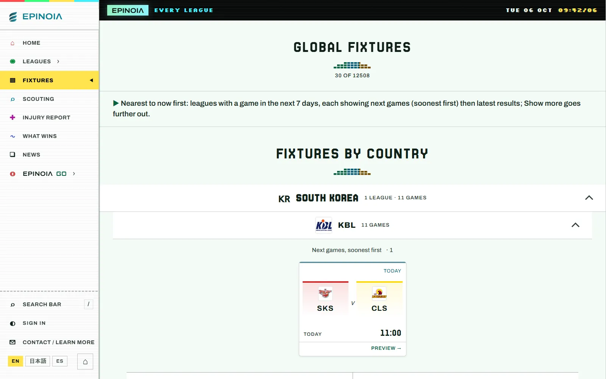

For leagues, clubs, partners and investors
The basketball data platform behind every page of this site: what it is, what it already runs, who it serves, and how to talk to us
Counted live from the platform's own database as this page opened
Counting…
One data pipeline, from the scorer's table to every screen
Epinoia is a basketball competition and analytics platform. It captures every game, live from a statistician's laptop, phone or tablet, or from a league's existing feed. It turns each game into a play-by-play log and derives from that one log everything a league, a club, a coach, a broadcaster and a fan could want: the table, the box score, the advanced numbers, the scouting reports, the alerts and the data feeds.
The result is the depth of statistics that professional leagues pay specialist providers for, made available to every level of the game, in English, Japanese and Spanish, on the web and on the phone. It is already live across the leagues counted above, many of them read from the feeds they already publish, so a competition can be covered before it has signed anything.
Most basketball is played without the numbers the top tier enjoys
Below the elite leagues, statistics are a box score at best and a photograph of a scoresheet at worst.
Lineups, on/off, shot zones, play types and scouting reports are bought by a handful of professional clubs. Everyone else does without, though their coaches, players and supporters ask the same questions.
Many leagues already publish play-by-play somewhere, in a format nobody else can use.
Epinoia reads those feeds as they are, in over twenty source formats, and turns them into one standard record, so the same analysis runs on a Japanese, a Spanish and an English league alike, and players can be compared across them.
A league that publishes real statistics is a league people follow, report on and scout.
Players need evidence for the next contract, recruiters need to compare leagues, and supporters and sponsors follow competitions that feel professional. Live scores, alerts and profiles are what make that happen.
Capture needs a phone and a browser. Analysis runs in the cloud. Delivery is the web, apps and email.
What once took a broadcast truck and a data contract now costs a volunteer statistician and a web page, which makes the long tail of basketball reachable for the first time.
Each reader arrives with a different question; here is each answer
A public site, live scoring, a table that cannot disagree with the games, and data that sells itself.
Professional-grade PDF reports, sent automatically: the game analysis when a game ends, the next opponent's report before the weekend.
Compare players across leagues and countries on advanced numbers, percentiles and models, not raw totals.
Live data for graphics, automatic match reports, storylines and social graphics in a click.
Live scores, a personal news feed, alerts and a game day worth sharing.
Signed-in followers, privacy-respecting analytics and placements that travel with every widget.
Widgets as one tag, a keyed JSON API, push on finalisation and calendar feeds.
Built, running and covering leagues in dozens of countries, with several revenue lines ready to switch on.
Revenue lines that are built into the platform today
What makes it hard to copy, and easy to adopt
Adapters for more than twenty feed formats read leagues' existing statistics, so a competition is covered, and its players scouted, before it signs anything; a signed league then adds live scoring and its own site.
BPM, adjusted plus-minus, lineups, situation splits and a win model are usually sold to the top tier. Here they are computed for every league with play-by-play, automatically, from the first game.
The scorer, the site and the server run the same code over the same log, so a correction in April moves every number from September at once, and a table can be rebuilt from scratch with the same answer.
Local-first scoring survives no signal; a phone reads the scoreboard clock; volunteers learn it in one game in training mode.
The site reads in English, Japanese and Spanish with each country's own basketball vocabulary, names are transliterated consistently, and every league keeps its own colours.
Minors are withheld at the database, readers' personalisation stays on their device, analytics count visits without identifying anyone, and data-rights requests run on a recorded clock.
Every public league today, by country, read live
Reading the leagues…
In progress now, kept apart from what is running
The NCAA's divisions read from their own feeds, with conference standings already supported by the platform.
Built alongside the released Android app, with push alerts; not yet released.
A labelling studio for Synergy-style play types, the first step to tagging possessions from game video.
The video hub and video seeking are a work in progress: broadcasts aligned to the play-by-play by reading the game clock, so any possession can be found in a click.
What a fan sees, on the web and in the app
The tools a competition runs on, behind the public pages
The depth behind every player and club
The data, wherever it needs to go
Captures of the running site









From an event log to every statistic, the same way everywhere
Everything is an event: a made two, a defensive rebound, a substitution. Each is a row appended to a log that is never edited in place: an append-only event log. One shared engine computes the box score, the lineups, the possessions and every advanced figure from that log, and it is the same file in the scorer, on the site and on the server.
Estimates of value and of what wins, refreshed as games finish
Every finished game is reduced on the server to a line of 108 counts per side, and the models refit from the new lines within the hour.
Per league and season it explains what decided the games played, forecasts from the season so far, and simulates a game possession by possession; a pooled model across every league's season gives the smaller leagues sound priors. Rebuilt from nothing every week.
Box plus/minus for every player's season, and Basketball-Reference's game-level adaptation for every game.
A game's BPM uses the player's season position and role, and the team rating from who actually played, calibrated to the competition's own level; it ranks the weekly stars.
Regularised adjusted plus-minus straight from the event log, and on/off and with-or-without splits from every stint, so a player is credited for what happens while he plays, adjusted for who he played with.
Each game number is read against a season of real games, replayed through the same engine, so a line shows as good or poor without knowing the league.
Cup finals, top-of-the-table meetings and record nights are scored, lifting their match reports in readers' feeds and explaining why.
Each club's results set against the quality of the opponents it has faced.
The return a side's shot diet should yield against what it made, and how steady a shooter is from three.
Who is missing, worked out from the games: a regular absent from the last ones is flagged, without anyone typing a list.
Several ways in, one record out
Enforced by the database, not by remembering
Take the whole platform, or the data for the site you have
For a competition with no website, or one that cannot carry statistics without retyping them.
For a competition that has a website and intends to keep it.
From the first conversation to the first live game
The scoring app in training mode, no account, nothing saved
Messages are read by a person, and answered
Running a competition on Epinoia, the report service, a wrong number in a box score.
Investment, sponsorship, news partnerships and data partnerships.
An API for your site, app or study, or a request about your personal data.